常用设计模式
UML图
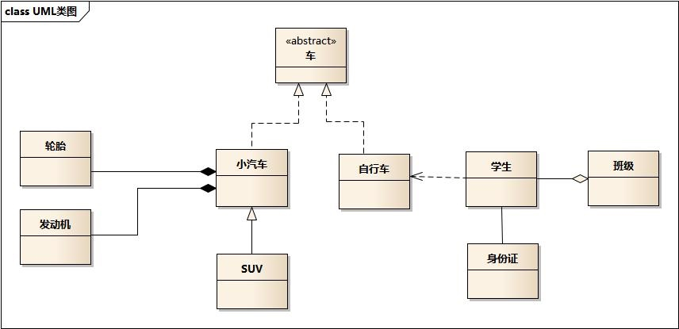
我们以这个图为例讲解 UML 图。
- 抽象类，
<<abstract>>，车。 - 继承，注意继承有两种方式，一种是实现，一种是泛化。
- 实现
空心箭头虚线，接口与接口实现，小汽车和自行车实现了车。 - 泛化
空心箭头实线，子类与父类，SUV和小汽车的关系。
- 实现
- 组合，
实心箭头实线，轮胎和发动机组成了小汽车。 - 聚合，
空心箭头实线，学生与班级为聚合关系。 - 关联，
实线，成员变量，学生和身份证为关联关系。 - 依赖，
箭头虚线，学生依赖于自行车。
工厂方法(Factory Method)
实际例子：你需要一把武器，这把武器可以由不同的铁匠铺来铸造，我们就可以指定铁匠铺然后基于武器类型来铸造武器。这其中，铁匠铺的manufactureWeapon就相当于一个工厂方法。
public interface Blacksmith {
Weapon manufactureWeapon(WeaponType weaponType);
}
public class ElfBlacksmith implements Blacksmith {
public Weapon manufactureWeapon(WeaponType weaponType) {
return new ElfWeapon(weaponType);
}
}
public class OrcBlacksmith implements Blacksmith {
public Weapon manufactureWeapon(WeaponType weaponType) {
return new OrcWeapon(weaponType);
}
}
// 测试//
Blacksmith blacksmith = new ElfBlacksmith();
blacksmith.manufactureWeapon(WeaponType.SPEAR);
blacksmith.manufactureWeapon(WeaponType.AXE);
// Elvish weapons are created
总结：工厂方法返回一个具体的工厂来创建类的实例。
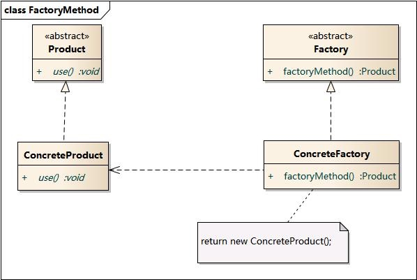
抽象工厂(Abstract Factory)
实际例子：如果我们需要创建一个王国，那么 A 国需要 A 王，A 城堡需要 A 军队。B 王国同理。所以这里王国与其附属之间存在依赖关系。
// 接口与实现
public interface Castle {
String getDescription();
}
public interface King {
String getDescription();
}
public interface Army {
String getDescription();
}
// Elven implementations ->
public class ElfCastle implements Castle {
static final String DESCRIPTION = "This is the Elven castle!";
@Override
public String getDescription() {
return DESCRIPTION;
}
}
public class ElfKing implements King {
static final String DESCRIPTION = "This is the Elven king!";
@Override
public String getDescription() {
return DESCRIPTION;
}
}
public class ElfArmy implements Army {
static final String DESCRIPTION = "This is the Elven Army!";
@Override
public String getDescription() {
return DESCRIPTION;
}
}
// Orcish implementations similarly...
/* 具体工厂 */
public interface KingdomFactory {
Castle createCastle();
King createKing();
Army createArmy();
}
public class ElfKingdomFactory implements KingdomFactory {
public Castle createCastle() {
return new ElfCastle();
}
public King createKing() {
return new ElfKing();
}
public Army createArmy() {
return new ElfArmy();
}
}
public class OrcKingdomFactory implements KingdomFactory {
public Castle createCastle() {
return new OrcCastle();
}
public King createKing() {
return new OrcKing();
}
public Army createArmy() {
return new OrcArmy();
}
}
/* 抽象工厂 */
public static class FactoryMaker {
public enum KingdomType {
ELF, ORC
}
public static KingdomFactory makeFactory(KingdomType type) {
switch (type) {
case ELF:
return new ElfKingdomFactory();
case ORC:
return new OrcKingdomFactory();
default:
throw new IllegalArgumentException("KingdomType not supported.");
}
}
}
总结：抽象工厂其实是一个工厂的工厂。
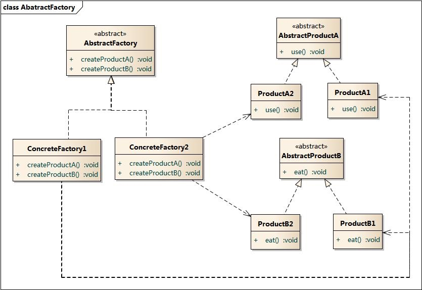
建造者(Builder)
实际例子：如果我们要创建一个角色扮演游戏中的角色，最简单的方式就是为它创建不同的特性，然后组合成这个角色。
// 定义需要构造的类
public final class Hero {
private final Profession profession;
private final String name;
private final Weapon weapon;
// 使用建造者来构造类
private Hero(Builder builder) {
this.profession = builder.profession;
this.name = builder.name;
this.armor = builder.armor;
}
}
// 定义建造者
public static class Builder {
private final Profession profession;
private final String name;
private Weapon weapon;
public Builder(Profession profession, String name) {
if (profession == null || name == null) {
throw new IllegalArgumentException("profession and name can not be null");
}
this.profession = profession;
this.name = name;
}
public Builder withWeapon(Weapon weapon) {
this.weapon = weapon;
return this;
}
public Hero build() {
return new Hero(this);
}
}
// 构造类实例
Hero mage = new Hero.Builder(Profession.MAGE,"Riobard").withWeapon(Weapon.DAGGER).build();
总结：将一个复杂对象的创建与表示分离。
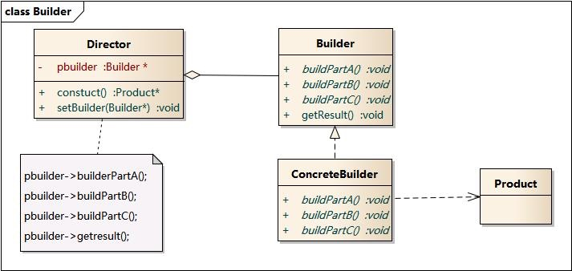
原型(Prototype)
实际例子：还记得第一只克隆羊多利吗？
class Sheep implements Cloneable {
private String name;
public Sheep(String name) { this.name = name; }
public void setName(String name) { this.name = name; }
public String getName() { return name; }
@Override
public Sheep clone() throws CloneNotSupportedException {
return new Sheep(name);
}
}
////////////////////////////////////////////////
Sheep original = new Sheep("Jolly");
System.out.println(original.getName()); // Jolly
// Clone and modify what is required
Sheep cloned = original.clone();
cloned.setName("Dolly");
System.out.println(cloned.getName()); // Dolly
总结：通过克隆已有对象的方式创建新的对象
单例(Singleton)
单例的实现有很多坑，在之后的 java 实现中具体讲。
总结：确保一个类只有一个实例。
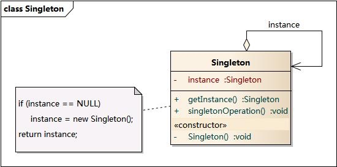
结构型
如何组合对象的模式。
适配器(Adapter)
实际例子：电脑一般都带有 USB 接口，但是很多非 USB 接口的设备想要插到电脑上时据需要转接头了。
public interface RowingBoat {
void row();
}
public class Captain implements RowingBoat {
private RowingBoat rowingBoat;
public Captain(RowingBoat rowingBoat) {
this.rowingBoat = rowingBoat;
}
@Override
public void row() {
rowingBoat.row();
}
}
//////
public class FishingBoat {
public void sail() {
print("The fishing boat is sailing");
}
}
//////
public class FishingBoatAdapter implements RowingBoat {
private FishingBoat boat;
public FishingBoatAdapter() {
boat = new FishingBoat();
}
@Override
public void row() { // 这里实现了接口的适配
boat.sail();
}
}
/////
Captain captain = new Captain(new FishingBoatAdapter());
captain.row();
总结：将一个非兼容接口的对象使用适配器包起来暴露兼容的接口
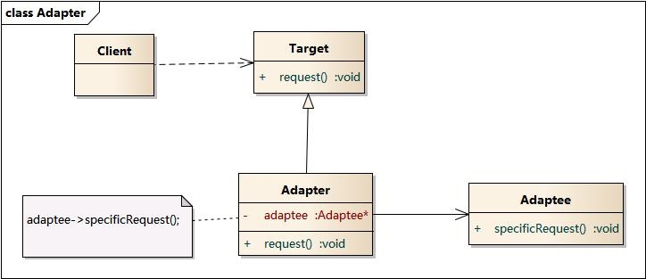
代理(Proxy)
实际例子：如果有一个巫师塔每次只允许三个巫师进入，就要通过代理来确保这样的限制。
public interface WizardTower {
void enter(Wizard wizard);
}
public class IvoryTower implements WizardTower {
private static final Logger LOGGER = LoggerFactory.getLogger(IvoryTower.class);
public void enter(Wizard wizard) {
LOGGER.info("{} enters the tower.", wizard);
}
}
//
public class Wizard {
private final String name;
public Wizard(String name) {
this.name = name;
}
@Override
public String toString() {
return name;
}
}
//
public class WizardTowerProxy implements WizardTower {
private static final Logger LOGGER = LoggerFactory.getLogger(WizardTowerProxy.class);
private static final int NUM_WIZARDS_ALLOWED = 3;
private int numWizards;
private final WizardTower tower;
public WizardTowerProxy(WizardTower tower) {
this.tower = tower;
}
@Override
public void enter(Wizard wizard) {
if (numWizards < NUM_WIZARDS_ALLOWED) {
tower.enter(wizard);
numWizards++;
} else {
LOGGER.info("{} is not allowed to enter!", wizard);
}
}
}
//
WizardTowerProxy proxy = new WizardTowerProxy(new IvoryTower());
proxy.enter(new Wizard("Red wizard")); // Red wizard enters the tower.
proxy.enter(new Wizard("White wizard")); // White wizard enters the tower.
proxy.enter(new Wizard("Black wizard")); // Black wizard enters the tower.
proxy.enter(new Wizard("Green wizard")); // Green wizard is not allowed to enter!
proxy.enter(new Wizard("Brown wizard")); // Brown wizard is not allowed to enter!
总结：通过代理来间接访问对象可以控制对象的访问
注意，代理模式后后面的装饰器模式区别在于，代理模式关注的是控制对象的访问。装饰器模式则是动态扩展类的功能
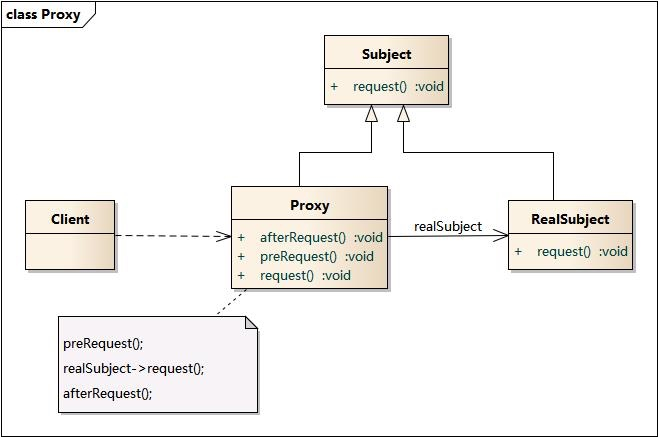
装饰器(Decorator)
实际例子：如果一个舞蹈家会跳舞，我们希望根据她衣服的不同来打不同的表演分数。
public interface Dancer {
void dance();
int score();
}
//// 被装饰的类
public class Alice implements Dancer {
@Override
public void dance() {
print("The Dancer is dancing");
}
@Override
public int score() {
return 10;
}
}
//// 装饰器的实现
public SkirtAlice implements Dancer {
private Dancer decorated;
public SkirtAlice(Dancer decorated) {
this.decorated = decorated;
}
@Override
public void dance() {
print("The Dancer in skirt is dancing");
}
@Override
public int score() {
return decorated.score() + 10;
}
}
//// 测试方法
Dancer alice = new Alice();
alice.dance(); // The Dancer is dancing
alaice.score(); // 10
Dancer skirtAlice = new SkirtAlice(alice);
skirtAlice.dance(); // The Dancer in skirt is dancing
skirtAlaice.score(); // 20
总结：通过封装对象扩展目标对象的功能
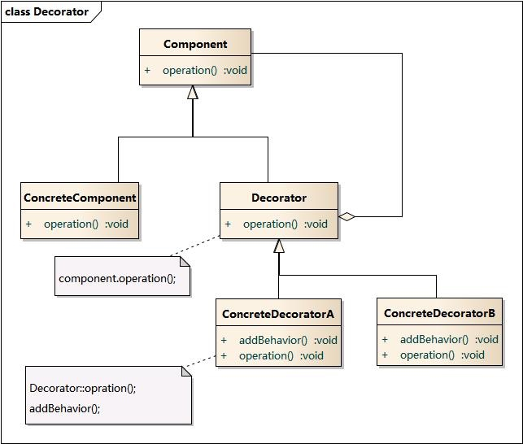
桥接(Bridge)
实际例子：如果你有一把武器，武器上面有附魔。不同的武器可以使用不同的附魔，那么如何进行组合呢。可以将不同的武器和附魔分开实现。
// 武器的接口及其实现
public interface Weapon {
void wield();
void swing();
void unwield();
Enchantment getEnchantment();
}
public class Sword implements Weapon {
private final Enchantment enchantment;
public Sword(Enchantment enchantment) {
this.enchantment = enchantment;
}
@Override
public void wield() {
LOGGER.info("The sword is wielded.");
enchantment.onActivate();
}
@Override
public void swing() {
LOGGER.info("The sword is swinged.");
enchantment.apply();
}
@Override
public void unwield() {
LOGGER.info("The sword is unwielded.");
enchantment.onDeactivate();
}
@Override
public Enchantment getEnchantment() {
return enchantment;
}
}
public class Hammer implements Weapon {
private final Enchantment enchantment;
public Hammer(Enchantment enchantment) {
this.enchantment = enchantment;
}
@Override
public void wield() {
LOGGER.info("The hammer is wielded.");
enchantment.onActivate();
}
@Override
public void swing() {
LOGGER.info("The hammer is swinged.");
enchantment.apply();
}
@Override
public void unwield() {
LOGGER.info("The hammer is unwielded.");
enchantment.onDeactivate();
}
@Override
public Enchantment getEnchantment() {
return enchantment;
}
}
// 附魔的接口及其实现
public interface Enchantment {
void onActivate();
void apply();
void onDeactivate();
}
public class FlyingEnchantment implements Enchantment {
@Override
public void onActivate() {
LOGGER.info("The item begins to glow faintly.");
}
@Override
public void apply() {
LOGGER.info("The item flies and strikes the enemies finally returning to owner's hand.");
}
@Override
public void onDeactivate() {
LOGGER.info("The item's glow fades.");
}
}
public class SoulEatingEnchantment implements Enchantment {
@Override
public void onActivate() {
LOGGER.info("The item spreads bloodlust.");
}
@Override
public void apply() {
LOGGER.info("The item eats the soul of enemies.");
}
@Override
public void onDeactivate() {
LOGGER.info("Bloodlust slowly disappears.");
}
}
// 测试 //
Sword enchantedSword = new Sword(new SoulEatingEnchantment());
enchantedSword.wield();
enchantedSword.swing();
enchantedSword.unwield();
// The sword is wielded.
// The item spreads bloodlust.
// The sword is swinged.
// The item eats the soul of enemies.
// The sword is unwielded.
// Bloodlust slowly disappears.
Hammer hammer = new Hammer(new FlyingEnchantment());
hammer.wield();
hammer.swing();
hammer.unwield();
// The hammer is wielded.
// The item begins to glow faintly.
// The hammer is swinged.
// The item flies and strikes the enemies finally returning to owner's hand.
// The hammer is unwielded.
// The item's glow fades.
总结：桥接模式更偏向于组合而不是继承关系
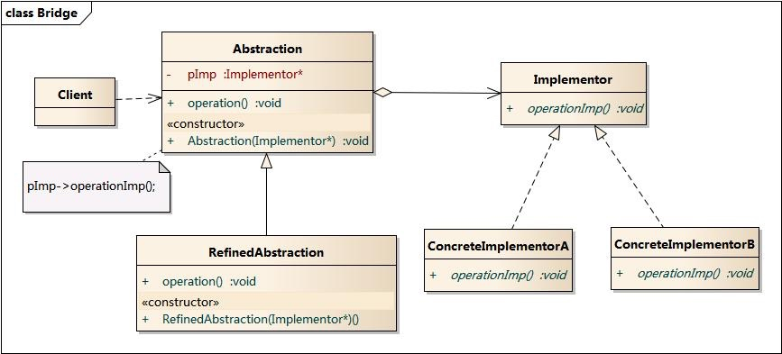
行为型
行为型模式是在不同对象之间进行算法的抽象。
观察者(Observer)
总结：定义对象与其多依赖的关系，当对象改变时依赖会自动更新。也叫发布/订阅者模式
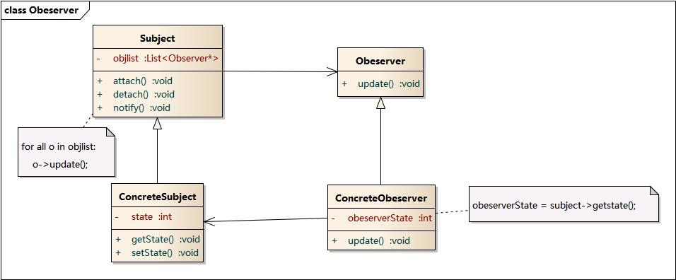
责任链(Chain of responsibility)
总结：用于消息传递的模型，事件会随着处理器一直传递下去。
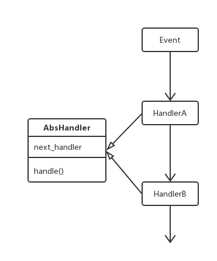
状态(State)
总结：当类的状态改变时同时改变其行为。
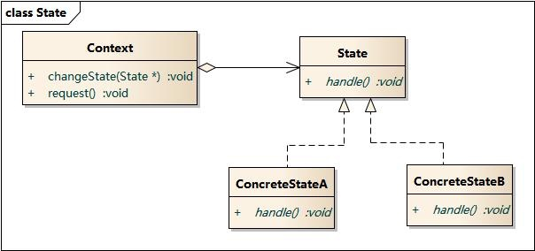
策略(Strategy)
总结：将算法的选择与实现分离
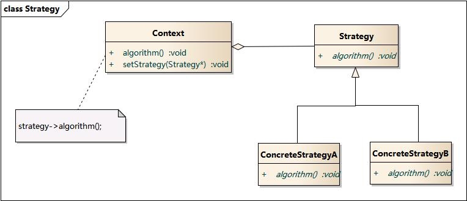
中介者(Mediator)
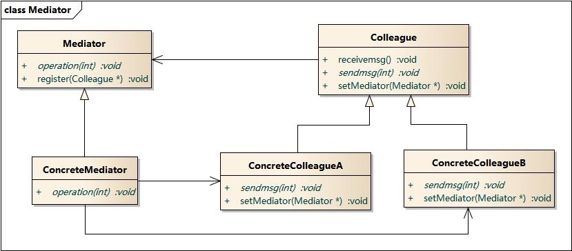
命令(Command)
总结：将一系列行为封装成为一个对象
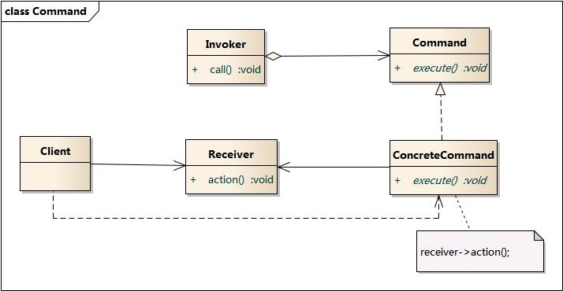
参考
图片来源：
Graphic Design Patterns
实例代码来源：
java design pattern